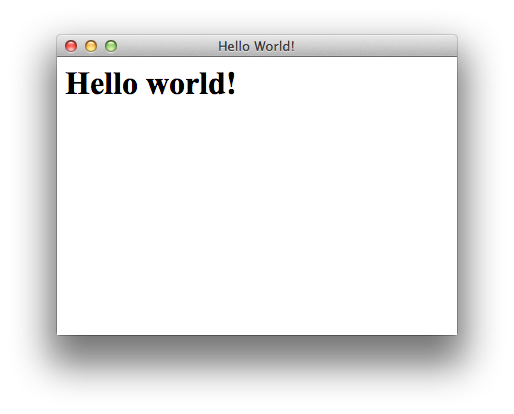

JxBrowser Programmer’s Guide
Version: 5.4.2
- Introduction
- 1.1 About This Document
- 1.2 About JxBrowser
- 1.3 Examples and Demo Application
- 1.4 Distribution Package
- 1.5 Installation Instruction
- 1.6 Licensing
- Requirements
- Browser Context
- Hello world!
- Loading URL
- Loading URL with POST Data
- Loading HTML
- Browser Events
- Pop-up Windows
- JavaScript
- JavaScript Dialogs
- JavaScript-Java Bridge
- Zooming
- Context Menu
- Cookies
- Navigation History
- User-Agent
- Proxy Settings
- 18.1 AutoDetect
- 18.2 Direct
- 18.3 AutoConfig URL
- 18.4 Manual
- Disabling images, videos, JavaScript, etc.
- Proxy Authentication
- Basic, Digest and NTLM Authentication
- Network Delegate
- File Downloads
- Web page as PNG image
- Executing commands
- Saving web pages
- DOM API
- DOM Events
- Find Text
- JxBrowser & Java Web Start
- JxBrowser & Java Applet
- Remote Debugging
- Drag and Drop
- Plugins
- 34.1 Flash and Silverlight
- 34.2 Plugins Manager
- Printing
- Geolocation
- Logging
- Known Restrictions
- Technical Support
1. Introduction
1.1. About This Document
This document represents a developer’s guide to JxBrowser library. Here you can find all the required information regarding the use of JxBrowser library in your Java Swing/AWT/JavaFX application.
1.2. About JxBrowser
JxBrowser is a cross-platform Java library that allows integrating Google Chromium-based web browser component into your Java Swing/AWT/JavaFX application. With JxBrowser you can embed a lightweight Swing/JavaFX component into your Java application to display modern web pages, supporting the latest web standards such as HTML5, CSS3, JavaScript etc.
etc.JxBrowser is based on Chromium 43.0.2357.52 engine and supports Windows, Linux and Mac OS X platforms. All the required Chromium binaries are deployed with JxBrowser libraries, so you don’t need to install Google Chromium on the target environment.
1.3. Examples and Demo Application
Almost all the examples from this guide can be found in the samples directory of JxBrowser Distribution Package and on the Samples web page.
You can find the JxBrowser Web Start Online Demo at http://www.teamdev.com/jxbrowser/onlinedemo.
1.4. Distribution Package
The structure of JxBrowser Distribution Package (jxbrowser-5.4.2-cross-desktop-win_mac_linux.zip) is the following:
lib/
jxbrowser-5.4.2.jar // JxBrowser library
jxbrowser-win-5.4.2.jar // Chromium binaries for Windows
jxbrowser-mac-5.4.2.jar // Chromium binaries for Mac OS X
jxbrowser-linux32-5.4.2.jar // Chromium binaries for Linux 32-bit
jxbrowser-linux64-5.4.2.jar // Chromium binaries for Linux 64-bit
samples/ // API samples
doc/javadoc/ // Public API JavaDocs
doc/guide/ // Programmer's and Quick Start Guide
demo/
jxbrowserdemo.jar // Demo application library
jxbrowserdemo.bat // Executable *.bat to run Demo application on Windows
jxbrowserdemo.sh // Executable *.sh to run Demo application on Mac OS X and Linux
Readme.txt // Readme file
License agreement.txt // License agreement
1.5. Installation Instruction
In order to use JxBrowser library in your Java application you need to include all the JAR files from the lib directory of the JxBrowser Distribution Package. Your application class path should look like:
java -classpath jxbrowser-5.4.2.jar;jxbrowser-win-5.4.2.jar;jxbrowser-mac-5.4.2.jar; jxbrowser-linux32-5.4.2.jar;jxbrowser-linux64-5.4.2.jar <your-application-class>
If your application supports only Windows platform, there is no need to include the jxbrowser-mac,
jxbrowser-linux32 and jxbrowser-linux64 JAR files into your application class
path.
The jxbrowser-win-5.4.2.jar, jxbrowser-mac-5.4.2.jar,
jxbrowser-linux32-5.4.2.jar, jxbrowser-linux64-5.4.2.jar libraries
contain Chromium binaries for corresponding platform. At the first run JxBrowser extracts the binaries from the
JAR file into user’s temp folder.
Chromium binaries
You can extract Chromium binaries from these JAR files manually and configure JxBrowser to use them via the
"jxbrowser.chromium.dir" System Property. This property must contain a valid absolute/related path to the
directory with extracted Chromium binaries.
JxBrowser checks the directory and if the directory doesn't
contain all the required Chromium files, JxBrowser will search for the binaries inside JAR files included in the application class path
and extract them programmatically. If JxBrowser couldn't find Chromium binaries in the provided directory and none of
JAR files included into Java application class path contains Chromium binaries, an exception will be thrown during
Browser instance initialization.
1.6. Licensing
The JxBrowser library requires a valid license (teamdev.licenses) file for operations. You can request a fully-functional 30-day evaluation license or purchase a commercial license for JxBrowser library.
30-day Evaluation license
When you request a 30-day evaluation license file, you get an email message with the link that you can use to
download a licence.jar file. To enable the evaluation license you need to include this
licence.jar into your application class path.
Commercial License
When you purchase a license file, you get two JARs: development.jar and runtime.jar.
You need to include one of these JARs into your application class path to enable the license. The difference
between Development and Runtime license is the following:
– you need to use the Development license (development.jar) for development
purposes only. The number of licenses should be equal to the number of developers who use JxBrowser in
development. For example, if you have 10 developers involved into your project and only 4 of them work with
JxBrowser, you should purchase 4 licenses only.
– the Runtime license (runtime.jar) should be used when you distribute your software with
JxBrowser enclosed. For example, you can include the runtime.jar file into class path of your application
production version. You can deploy the Runtime license with your application to unlimited number of end users.
License Information
In order to get information about the JxBrowser license, use the "teamdev.license.info" system
property. The following code demonstrates how to enable license info printing in your application.
System.setProperty("teamdev.license.info", "true");
Browser browser = new Browser();
2. Requirements
JxBrowser supports Windows, Linux and Mac OS X platforms (Intel and AMD), both 32- and 64-bit:
2.1. Windows
- Microsoft Windows XP (SP2), 7, 8, Vista, Server 2003 (SP1), Server 2008/2012, 32-bit and 64-bit.
- Swing: Oracle (Sun) JRE 1.6.x and higher, IBM JRE 1.7.x and higher, 32-bit and 64-bit.
- JavaFX: Oracle (Sun) JRE 1.8.x and higher, 32-bit and 64-bit.
2.2. Linux
- Ubuntu 12.04+, Debian 7.7, RedHat Enterprise Linux 7, openSUSE 13.1, Fedora 20, 32-bit and 64-bit.
- Swing: Oracle (Sun) JRE 1.6.x and higher, IBM JRE 1.7.x and higher, 32-bit and 64-bit.
- JavaFX: Oracle (Sun) JRE 1.8.x and higher, 32-bit and 64-bit.
Linux environment must be in non-headless mode, because Chromium doesn't support headless mode.
2.3. Mac OS X
- Mac OS X 10.7.x - 10.10.x (Intel)
- Swing: Apple or Oracle (Sun) JRE 1.6.x and higher, 32-bit and 64-bit.
- JavaFX: Oracle (Sun) JRE 1.8.x and higher, 32-bit and 64-bit.
3. Browser Context
Each Browser instance must be initialized with BrowserContext.
BrowserContext holds the context needed for a browsing session and provides path to the directory
where Chromium stores cookies, cache data files, etc.
The following code creates a new Browser instance initialized with default context:
Browser browser = new Browser();The code above equals to:
Browser browser = new Browser(BrowserContext.defaultContext());
The BrowserContext.defaultContext() method returns default BrowserContext that
is configured to store Chromium data files such as cookies, cache, etc. in user's temp directory. You can
get path to the directory where data files are stored using the BrowserPreferences.getDefaultDataDir()
method.
Two Browser instances with same BrowserContext will use same user data directory. As
result they shares cookies and cache files. For example:
BrowserContext context = new BrowserContext("C:\\my-data1");
Browser browser1 = new Browser(context);
Browser browser2 = new Browser(context);
To create independent Browser instances that don't share cookies and cache data, you must initialize
each Browser instance with a different BrowserContext configured to use different
data directory. For example:
BrowserContext context1 = new BrowserContext("C:\\my-data1");
Browser browser1 = new Browser(context1);
BrowserContext context2 = new BrowserContext("C:\\my-data2");
Browser browser2 = new Browser(context2);
To get BrowserContext of the Browser instance you can use the browser.getContext()
method.
Make sure that you don't use several BrowserContext instances configured to use same data directory.
In this case Chromium engine will read/write same data directory from different Browser instances which might cause
unexpected behavior or errors.
4. Hello world!
After including all the required JxBrowser JAR files into your application class path together with the license JAR, you should be able to run your first program with JxBrowser in it:
Swing
import com.teamdev.jxbrowser.chromium.Browser;
import com.teamdev.jxbrowser.chromium.swing.BrowserView;
import javax.swing.*;
import java.awt.*;
public class HelloWorldSample {
public static void main(String[] args) {
Browser browser = new Browser();
BrowserView browserView = new BrowserView(browser);
JFrame frame = new JFrame("Hello World!");
frame.setDefaultCloseOperation(WindowConstants.EXIT_ON_CLOSE);
frame.add(browserView, BorderLayout.CENTER);
frame.setSize(400, 300);
frame.setVisible(true);
browser.loadHTML("<html><body><h1>Hello world!</h1></body></html>");
}
}
To embed Browser into a Swing container use the com.teamdev.jxbrowser.chromium.swing.BrowserView component.
JavaFX
import com.teamdev.jxbrowser.chromium.Browser;
import com.teamdev.jxbrowser.chromium.javafx.BrowserView;
import javafx.application.Application;
import javafx.scene.Scene;
import javafx.scene.layout.StackPane;
import javafx.stage.Stage;
public class HelloWorldSample extends Application {
@Override
public void start(Stage primaryStage) {
Browser browser = new Browser();
BrowserView browserView = new BrowserView(browser);
StackPane pane = new StackPane();
pane.getChildren().add(browserView);
Scene scene = new Scene(pane, 400, 300);
primaryStage.setScene(scene);
primaryStage.show();
browser.loadHTML("<html><body><h1>Hello world!</h1></body></html>");
}
public static void main(String[] args) {
launch(args);
}
}
To embed Browser into a JavaFX container use the com.teamdev.jxbrowser.chromium.javafx.BrowserView component.
This simple example above shows how to create a Browser component, embed it into Swing/JavaFX container, display it and load the "<html><body><h1>Hello
world!</h1></body></html>" HTML string directly into the Browser.
When you run this sample you should see the following output:
5. Loading URL
In order to load a web page by its URL you can use the Browser.loadURL(String url), Browser.loadURL(int
frameId, String url) and Browser.loadURL(LoadURLParams params) methods. The following code
demonstrates how to load the http://www.google.com web page:
browser.loadURL("http://www.google.com");
All web pages are loaded asynchronously. It means that the Browser.loadURL() method doesn’t
guarantee that the web page will be loaded completely after this method has finished its execution. For testing
purposes you may need to wait until the web page is loaded completely. In this case you can use the following
approach:
browser.loadURL("http://www.google.com");
while (browser.isLoading()) {
TimeUnit.MILLISECONDS.wait(50);
}
// web page is loaded completely
The code below shows how to periodically check if the Browser component is still loading web page. This approach
blocks the current thread execution until the web page is loaded completely. If you don’t need to block the
current thread and receive notification when the web page is loaded completely, you can use the
LoadListener.onFinishLoadingFrame(FinishLoadingEvent event) event. For example:
browser.addLoadListener(new LoadAdapter() {
@Override
public void onFinishLoadingFrame(FinishLoadingEvent event) {
if (event.isMainFrame()) {
// web page is loaded completely including all frames
}
}
});
browser.loadURL("http://www.google.com");
You can find more information about LoadListener in the Load chapter of
this guide.
6. Loading URL with POST Data
To send POST data to a specific URL you can use the Browser.loadURL(LoadURLParams params)
method:
browser.loadURL(new LoadURLParams("http://www.google.com",
"firstKey=KeyValue1&secondKey=KeyValue2"));
POST data in this method represents a string in the key=value&key=value... format. The content type
in HTTP header for all the POST data will be application/x-www-form-urlencoded.
7. Loading HTML
To load HTML document from a string you can use the Browser.loadHTML(String html) or Browser.loadHTML(LoadHTMLParams
params) method. The second method allows you to provide additional parameters to the Browser component,
such as text encoding and base URL for resolving relative links.
browser.loadHTML("<html><body><h1>HTML Content</h1></body></html>");
To find out whether HTML document is loaded completely, you can use one of the described approaches in the Loading URL section.
8. Browser Events
JxBrowser API provides different listeners for listening various browser events such as loading events, title change, zoom level change, render process events etc.
8.1. Load
The LoadListener provides methods for receiving browser load events. You can use this listener to
get notifications about web page loading events, document availability events, loading failure events etc. The
following code demonstrates how to register LoadListener:
browser.addLoadListener(new LoadAdapter() {
@Override
public void onStartLoadingFrame(StartLoadingEvent event) {
if (event.isMainFrame()) {
System.out.println("Main frame has started loading");
}
}
@Override
public void onProvisionalLoadingFrame(ProvisionalLoadingEvent event) {
if (event.isMainFrame()) {
System.out.println("Provisional load was committed for a frame");
}
}
@Override
public void onFinishLoadingFrame(FinishLoadingEvent event) {
if (event.isMainFrame()) {
System.out.println("Main frame has finished loading");
}
}
@Override
public void onFailLoadingFrame(FailLoadingEvent event) {
int errorCode = event.getErrorCode();
if (event.isMainFrame()) {
System.out.println("Main frame has failed loading: " + errorCode);
}
}
@Override
public void onDocumentLoadedInFrame(FrameLoadEvent event) {
System.out.println("Frame document is loaded.");
}
@Override
public void onDocumentLoadedInMainFrame(LoadEvent event) {
System.out.println("Main frame document is loaded.");
}
});
8.2. Title
The TitleListener allows you to receive the document title change events. For example:
browser.addTitleListener(new TitleListener() {
public void onTitleChange(TitleEvent event) {
System.out.println("Title = " + event.getTitle());
}
});
8.3. Zoom
The ZoomListener can be used to listen to the zoom level change events for different web pages. For
example:
browser.getContext().getZoomService().addZoomListener(new ZoomListener() {
public void onZoomChanged(ZoomEvent event) {
System.out.println("event.getURL() = " + event.getURL());
System.out.println("event.getZoomLevel() = " + event.getZoomLevel());
System.out.println("event.isRemember() = " + event.isRemember());
}
});
You can configure default zoom level for all web pages using the
browser.getContext().getZoomService().setDefaultZoomLevel(double level) method.
8.4. Dispose
The DisposeListener allows you to receive notifications about Browser instance disposal. This
listener informs you that its Browser instance is disposed because of the Browser.dispose() method
or because the JavaScript window.close() function has been invoked. For example:
Browser browser = new Browser();
browser.addDisposeListener(new DisposeListener<Browser>() {
public void onDisposed(DisposeEvent<Browser> event) {
System.out.println("Browser is disposed.");
}
});
browser.dispose();
8.5. Render
EachBrowser instance is running in a separate native process where the web page is rendered. Sometimes this
process can exit unexpectedly because of the crash in plugin. To receive notifications about unexpected render
process termination you can use RenderListener. When you receive notification about render process
termination you can display a "sad" icon like Google Chrome does, for example, to inform the user that this
particular Browser component has crashed. Example:
browser.addRenderListener(new RenderAdapter() {
@Override
public void onRenderCreated(RenderEvent event) {
System.out.println("Render process is created.");
}
@Override
public void onRenderGone(RenderEvent event) {
System.out.println("Render process is gone:");
TerminationStatus terminationStatus =
event.getTerminationStatus();
System.out.println("Termination Status: " + terminationStatus);
}
});
If you refresh or load the same or another URL, the render process and Browser instance will be
restored. Example:
browser.addRenderListener(new RenderAdapter() {
@Override
public void onRenderGone(RenderEvent event) {
Browser browser = event.getBrowser();
// Restore Browser instance by loading the same URL
browser.loadURL(browser.getURL());
}
});
9. Pop-up Windows
Any web page can display pop-up windows. JxBrowser API provides PopupHandler to handle pop-up window
creation.
By default JxBrowser doesn't display pop-up windows, because it cannot know what UI Toolkit must be used — Swing or JavaFX.
To enable support of popup-windows you must register default Swing or JavaFX implementation depending on what UI Toolkit you use in your Java application:
Swing
Register default Swing popup handler implementation:
browser.setPopupHandler(new com.teamdev.jxbrowser.chromium.swing.DefaultPopupHandler());
Register custom Swing popup handler implementation:
browser.setPopupHandler(new PopupHandler() {
public PopupContainer handlePopup(PopupParams params) {
return new PopupContainer() {
public void insertBrowser(final Browser browser, Rectangle initialBounds) {
BrowserView browserView = new BrowserView(browser);
browserView.setPreferredSize(initialBounds.getSize());
final JFrame frame = new JFrame("Popup");
frame.setDefaultCloseOperation(WindowConstants.DISPOSE_ON_CLOSE);
frame.add(browserView, BorderLayout.CENTER);
frame.pack();
frame.setLocation(initialBounds.getLocation());
frame.setVisible(true);
frame.addWindowListener(new WindowAdapter() {
@Override
public void windowClosing(WindowEvent e) {
browser.dispose();
}
});
browser.addDisposeListener(new DisposeListener() {
public void onDisposed(DisposeEvent event) {
frame.setVisible(false);
}
});
}
};
}
});
JavaFX
Register default JavaFX popup handler implementation:
browser.setPopupHandler(new com.teamdev.jxbrowser.chromium.javafx.DefaultPopupHandler());
Register custom JavaFX popup handler implementation:
browser.setPopupHandler(new PopupHandler() {
public PopupContainer handlePopup(PopupParams params) {
return new PopupContainer() {
public void insertBrowser(final Browser browser, final Rectangle initialBounds) {
Platform.runLater(new Runnable() {
@Override
public void run() {
final Stage stage = new Stage();
StackPane root = new StackPane();
Scene scene = new Scene(root, 800, 600);
BrowserView browserView = new BrowserView(browser);
root.getChildren().add(browserView);
stage.setScene(scene);
stage.setTitle("Popup");
if (!initialBounds.isEmpty()) {
stage.setX(initialBounds.getLocation().getX());
stage.setY(initialBounds.getLocation().getY());
stage.setWidth(initialBounds.width);
stage.setHeight(initialBounds.height);
}
stage.setOnCloseRequest(new EventHandler<javafx.stage.WindowEvent>() {
public void handle(javafx.stage.WindowEvent event) {
browser.dispose();
}
});
browser.addDisposeListener(new DisposeListener<Browser>() {
public void onDisposed(DisposeEvent<Browser> event) {
Platform.runLater(new Runnable() {
public void run() {
stage.close();
}
});
}
});
stage.show();
}
});
}
};
}
});
10. JavaScript
Ability to execute JavaScript code on the loaded web page is one of the main features of JxBrowser. To execute JavaScript code, first of all you need to make sure that web page is loaded completely (see Loading URL chapter).
If the web page is loaded completely you can execute JavaScript code on it in one of the following ways:
1. Using the Browser.executeJavaScript(String javaScript) method. This method executes the
JavaScript code asynchronously without blocking the current thread execution. If you are not interested in
receiving the result of JavaScript code, you can use this method because its return parameter is void.
2. Using the Browser.executeJavaScriptAndReturnValue(String javaScript) method. This method executes
the code described by javaScript parameter and returns the result of JavaScript code execution as
JSValue. This method blocks the current thread execution until the passed JavaScript code stop its
execution and return the result of execution.
The JSValue provides access to the result of JavaScript code execution. Using the methods of JSValue
you can determine whether the result value is an object, number, string or boolean value. For example, the
following code demonstrates how to get a document title string value using the Browser.executeJavaScriptAndReturnValue(String
javaScript) method:
JSValue documentTitle = browser.executeJavaScriptAndReturnValue("document.title");
// Make sure that result value is a string and read its value
if (documentTitle.isString()) {
System.out.println("Document Title = " + documentTitle.getString());
}
In this sample we check that the return JSValue is a string value, using the JSValue.isString()
method; and access the string value, using the JSValue.getString() method.
Please avoid using the Browser.executeJavaScriptAndReturnValue(String javaScript)
method in
Swing UI thread, because the passed JavaScript code can cause JavaScript Alert dialog to be shown. All the
dialogs are displayed in Swing UI thread by default. As result, it can cause a deadlock.
11. JavaScript Dialogs
JxBrowser API provides DialogHandler interface that allows handling JavaScript dialogs.
By default JxBrowser doesn't display JavaScript dialogs such as Alert, Confirmation or Prompt, because it doesn't know what UI Toolkit must be used — Swing or JavaFX.
To enable JavaScript dialogs you must register Swing or JavaFX DialogHandler implementation depending
on what UI Toolkit you use in your Java application:
Swing
import com.teamdev.jxbrowser.chromium.swing.BrowserView;
import com.teamdev.jxbrowser.chromium.swing.DefaultDialogHandler;
Browser browser = new Browser();
final BrowserView browserView = new BrowserView(browser);
browser.setDialogHandler(new DefaultDialogHandler(browserView) {
@Override
public void onAlert(DialogParams params) {
String title = "My Alert Dialog";
String message = params.getMessage();
JOptionPane.showMessageDialog(browserView, message, title,
JOptionPane.PLAIN_MESSAGE);
}
});
JavaFX
import com.teamdev.jxbrowser.chromium.javafx.BrowserView;
import com.teamdev.jxbrowser.chromium.javafx.DefaultDialogHandler;
import com.teamdev.jxbrowser.chromium.javafx.internal.dialogs.MessageDialog;
Browser browser = new Browser();
final BrowserView browserView = new BrowserView(browser);
browser.setDialogHandler(new DefaultDialogHandler(browserView) {
@Override
public void onAlert(DialogParams params) {
String title = "My Alert Dialog";
String message = params.getMessage();
MessageDialog.show(browserView, title, message);
}
});
12. JavaScript-Java Bridge
JxBrowser API provides functionality that allows you to register a BrowserFunction callback and
associate it with JavaScript function. Every time when this JavaScript function is invoked, an appropriate
BrowserFunction callback will be used as a body for this JavaScript function. You can receive input
parameters from JavaScript as array of JSValue instances and even return the function result from
Java to JavaScript via JSValue.
browser.registerFunction("MyFunction", new BrowserFunction() {
public JSValue invoke(JSValue... args) {
for (JSValue arg : args) {
System.out.println("arg = " + arg);
}
return JSValue.create("Hello!");
}
});
In the example above we register a BrowserFunction callback and associate it with the "MyFunction"
JS function. After that, every time when JavaScript on any web page invokes the "MyFunction" JS function, the
invoke() method of our BrowserFunction instance will be executed:
var result = MyFunction("Hello JxBrowser!", 1, 2, 3, true);
The result of the JavaScript code above will be the "Hello!" string.
When you don’t need to use the BrowserFunction instance you can un-register it using the Browser.unregisterFunction(String
functionName) method:
browser.unregisterFunction("MyFunction");
This functionality doesn't allow overriding existing JavaScript functions. So, if JavaScript on the
web page already defines the MyFunction function, then the registered "MyFunction" Java callback
will not be invoked.
13. Zooming
With JxBrowser you can zoom the web page content using Browser.setZoomLevel(double
zoomLevel), Browser.zoomIn(), Browser.zoomOut(),
Browser.zoomReset() methods. Please note that zoom level can be applied only for the completely loaded
web page. You need to wait until the web page is loaded completely and only then you can zoom it:
browser.addLoadListener(new LoadAdapter() {
@Override
public void onFinishLoadingFrame(FinishLoadingEvent event) {
if (event.isMainFrame()) {
event.getBrowser().setZoomLevel(2.0);
}
}
});
The zoom level is configured for each domain separately, so if you have set zoom level for the a.com
web page, it will not be applied for the b.com web page.
14. Context Menu
By registering your ContextMenuHandler implementation you can handle mouse right click events on a
web page and display your custom Swing context menu. To register your implementation of the ContextMenuHandler
you should use the Browser.setContextMenuHandler(ContextMenuHandler contextMenuHandler) method.
JxBrowser doesn't display context menu by default.
15. Cookies
Using CookieStorage you can manage all the Browser cookies including session, secure, HTTP-only and
persistent cookies. To access the Browser’s cookie storage you can use the
Browser.getCookieStorage() method. For example:
CookieStorage cookieStorage = browser.getCookieStorage(); List<Cookie> cookies = cookieStorage.getAllCookies();
The CookieStorage allows receiving all the cookies, deleting and registering new cookies. Every time
when you modify the cookie storage you must save the changes using the CookieStorage.save() method.
For example:
CookieStorage cookieStorage = browser.getCookieStorage();
cookieStorage.setSessionCookie("http://www.a.com", "name1", "value1", ".a.com",
"/", false, false);
cookieStorage.save();
All Browser instances share the persistent cookies by default, because they use the same user data directory
where
the persistent cookies are stored. If you need to avoid such sharing, you can provide unique user data directory
for
each Browser instance. In the BrowserContext parameter you can provide the data directory path that
must be used in the new Browser(BrowserContext browserContext) method. For example:
Browser browser = new Browser(new BrowserContext("C:\\MyUserData"));
16. Navigation History
JxBrowser provides API that allows you to work with Browser's navigation history. Using this API, you can remove navigation history entries (clear navigation history), obtain information about every entry (e.g. URL, title, HTTP status code, etc.), get total number of history entries and navigate to a specified entry from the history.
The following sample demonstrates how to use Navigation History API:
Browser browser = new Browser();
// Returns the number of entries in the back/forward list.
int entryCount = browser.getNavigationEntryCount();
// Returns index of the current navigation entry in the back/forward list.
int index = browser.getCurrentNavigationEntryIndex();
// Navigates to the entry at a specific index in the back/forward list.
browser.goToIndex(index);
// Removes navigation entry from the back/forward list at a specific index.
boolean success = browser.removeNavigationEntryAtIndex(index);
// Prints information about the navigation entry at specific index.
NavigationEntry navigationEntry = browser.getNavigationEntryAtIndex(index);
System.out.println("URL = " + navigationEntry.getURL());
System.out.println("Original URL = " + navigationEntry.getOriginalURL());
System.out.println("Title = " + navigationEntry.getTitle());
17. User-Agent
Due to Chromium API restrictions the default user-agent string can be modified only once, before you create any
Browser instances. You can provide your own user-agent string using the BrowserPreferences.setUserAgent(String
userAgent) method or via the "jxbrowser.chromium.user-agent" Java System Property.
BrowserPreferences.setUserAgent("My User Agent String");
Browser browser = new Browser();
BrowserView browserView = new BrowserView(browser);
JFrame frame = new JFrame();
frame.add(browserView, BorderLayout.CENTER);
frame.setSize(700, 500);
frame.setVisible(true);
browser.loadURL("http://whatsmyuseragent.com/");
18. Proxy Settings
Proxy settings can be configured for each Browser instance during its creation. You can set the required Proxy
configuration using the new Browser(ProxyConfig proxyConfig) method. The workflow
is the following:
Browser browser = new Browser(new [AutoDetectProxyConfig, DirectProxyConfig,
URLProxyConfig or CustomProxyConfig]);
By default JxBrowser uses system proxy settings. On Windows, JxBrowser uses the same settings that MS Internet Explorer uses. On Mac — it uses the proxy settings listed under the Network Control Panel. These are the same settings that Safari uses. On Linux — JxBrowser uses either GNOME/KDE proxy settings, or will use certain environment variables. When you modify JxBrowser proxy settings you don't modify the system global proxy settings.
The ProxyConfig class is an abstract class that is implemented by different proxy configurations:
18.1. AutoDetect
With the AutoDetectProxyConfig proxy configuration the connection automatically detects proxy
settings:
new Browser(new AutoDetectProxyConfig());
18.2. Direct
With the DirectProxyConfig configuration the connection will not use proxy server at all:
new Browser(new DirectProxyConfig());
18.3. AutoConfig URL
With the URLProxyConfig proxy configuration the connection uses proxy settings received from proxy
auto-config (PAC) file. You will need to provide URL of the required PAC file:
new Browser(new URLProxyConfig("<pac-file-url>"));
URL to the PAC file must be a valid http:// address. You cannot provide a path to the
local *.pac
file. The name of the PAC file must have the "pac" extension. For example,
http://my-site.com/proxy.pac and on a web server the pac file must be served with the
application/x-ns-proxy-autoconfig mime type.
18.4. Manual
With the CustomProxyConfig proxy configuration you can provide custom proxy settings for HTTP, HTTPS
and FTP protocols:
HostPortPair httpServer = new HostPortPair("http-proxy-server", 80);
HostPortPair httpsServer = new HostPortPair("https-proxy-server", 80);
HostPortPair ftpServer = new HostPortPair("ftp-proxy-server", 80);
String exceptions = "<local>"; // bypass proxy server for local web pages
new Browser(new CustomProxyConfig(httpServer, httpsServer, ftpServer,
exceptions));
The format of the exceptions string can be any of the following:
– [ URL_SCHEME "://" ] HOSTNAME_PATTERN [ ":" <port> ]
e.g. "foobar.com", "*foobar.com", "*.foobar.com", "*foobar.com:99", "https://x.*.y.com:99"
– "." HOSTNAME_SUFFIX_PATTERN [ ":" PORT ]
e.g. ".google.com", ".com", "http://.google.com"
– [ SCHEME "://" ] IP_LITERAL [ ":" PORT ]
e.g. "127.0.1", "[0:0::1]", "[::1]", "http://[::1]:99"
– IP_LITERAL "/" PREFIX_LENGHT_IN_BITS
e.g. "192.168.1.1/16", "fefe:13::abc/33"
– "<local>" Match local addresses. The meaning of "<local>" is
whether the host
matches one of:
"127.0.0.1", "::1", "localhost".
19. Disabling images, JavaScript, videos, etc.
JxBrowser provides functionality that allows you to enable or disable various features, such as images,
JavaScript, videos, etc., for each Browser instance.
The following sample demonstrates how to disable images and JavaScript on www.google.com web page:
Browser browser = new Browser();
// Gets the current Browser's preferences
BrowserPreferences preferences = browser.getPreferences();
preferences.setImagesEnabled(false);
preferences.setJavaScriptEnabled(false);
// Updates Browser's preferences
browser.setPreferences(preferences);
// Images and JavaScript will be disabled
browser.loadURL("http://www.google.com/");
20. Proxy Authentication
Some proxy servers require authorization. You can use the NetworkDelegate.onAuthRequired(AuthRequiredParams
params) handler in order to handle proxy authentication. The following sample demonstrates how to use it:
browser.getContext().getNetworkService().setNetworkDelegate(new DefaultNetworkDelegate() {
@Override
public boolean onAuthRequired(AuthRequiredParams params) {
if (params.isProxy()) {
params.setUsername("proxy-username");
params.setPassword("proxy-password");
// Don't cancel authentication
return false;
}
// Cancel authentication
return true;
}
});
By default JxBrowser doesn't display authorization dialog because it doesn't know what UI Toolkit must be used — Swing or JavaFX.
21. Basic, Digest and NTLM Authentication
To handle basic, digest or NTLM authentication you can use the NetworkDelegate.onAuthRequired(AuthRequiredParams
params) handler.
To display authentication dialog where user can enter valid user name and password you must
register default Swing/JavaFX implementation of the NetworkDelegate or your own implementation
of the NetworkDelegate interface.
The following example demonstrates how to register and override default Swing implementation of
the NetworkDelegate interface in order to provide user name and password without displaying
authorization dialog:
import com.teamdev.jxbrowser.chromium.swing.DefaultNetworkDelegate;
browser.getContext().getNetworkService().setNetworkDelegate(new DefaultNetworkDelegate() {
@Override
public boolean onAuthRequired(AuthRequiredParams params) {
if (!params.isProxy()) {
params.setUsername("proxy-username");
params.setPassword("proxy-password");
// Don't cancel authentication
return false;
}
// Cancel authentication
return true;
}
});
22. Network Delegate
JxBrowser provides functionality that allows handling network activity including HTTP requests/responses.
You can use the NetworkDelegate to handle all network activity of the Browser
instances associated with specified BrowserContext.
With NetworkDelegate you can intercept all HTTP requests/responses headers and obtain information
about each request/response stage. Below is the list of all request/response stages:
-
onBeforeRequest
Fires when a request is about to occur. This event is sent before any TCP connection is made and can be used to redirect requests to another location. It can be used to access and modify POST data of the request when method type is "POST". See example.
-
onBeforeSendHeaders
Fires when a request is about to occur and the initial headers have been prepared. It allows adding, modifying, and deleting HTTP request headers
-
onBeforeSendProxyHeaders
Fires after onBeforeSendHeaders when proxy connection is used. Provides information about proxy connection, and allows adding, modifying, and deleting HTTP request headers.
-
onSendHeaders
Fires right before the HTTP headers are sent to the network. This event is informational and it does not allow modifying HTTP headers.
-
onHeadersReceived
Fires each time that an HTTP(S) response header is received. Due to redirects and authentication requests this can happen multiple times per request. This event is intended to allow adding, modifying, and deleting HTTP response headers, such as incoming "Set-Cookie" headers.
-
onAuthRequired
Fires when a request receives an authentication challenge and is unable to respond using cached credentials. You can use this method to handle "basic" or "digest" authentication.
-
onBeforeRedirect
Fires when a request is about to occur and the initial headers have been prepared. It allows adding, modifying, and deleting HTTP request headers.
-
onResponseStarted
Fires when the first byte of the response body is received. For HTTP requests, this means that the status line and response headers are available. This event is informational.
-
onCompleted
Fires when a request has been processed successfully or failed.
-
onDestroyed
Fires when a request is being destroyed.
-
onCanSetCookies
Fires when engine is about to decide whether specified cookies can be set or not.
-
onCanGetCookies
Fires when engine is about to decide whether specified cookies can be received and send to a web server.
The following sample demonstrates how to change target URL using onBeforeURLRequest event and
print "User-Agent" HTTP header value when user loads www.google.com:
BrowserContext browserContext = BrowserContext.defaultContext();
browserContext.getNetworkService().setNetworkDelegate(new DefaultNetworkDelegate() {
@Override
public void onBeforeURLRequest(BeforeURLRequestParams params) {
// If navigate to teamdev.com, then change URL to google.com.
if (params.getURL().equals("http://www.teamdev.com/")) {
params.setURL("www.google.com");
}
}
@Override
public void onBeforeSendHeaders(BeforeSendHeadersParams params) {
// If navigate to google.com, then print User-Agent header value.
if (params.getURL().equals("http://www.google.com/")) {
HttpHeaders headers = params.getHeaders();
System.out.println("User-Agent: " + headers.getHeader("User-Agent"));
}
}
});
Browser browser = new Browser(browserContext);
browser.loadURL("http://www.teamdev.com/");
23. File Downloads
JxBrowser provides API that allows handling all the file downloads. Using this API you can control what files should be downloaded, provide path to the destination directory where file must be saved and track download progress.
You can register your own implementation of the DownloadHandler interface to
handle file downloads in your own way. The following sample demonstrates how to do this:
browser.setDownloadHandler(new DownloadHandler() {
public boolean allowDownload(DownloadItem download) {
download.addDownloadListener(new DownloadListener() {
public void onDownloadUpdated(DownloadEvent event) {
DownloadItem download = event.getDownloadItem();
if (download.isCompleted()) {
System.out.println("Download is completed!");
}
}
});
System.out.println("Dest file: " + download.getDestinationFile().getAbsolutePath());
return true;
}
});
The DownloadItem class provides methods for pausing and canceling download process. See its corresponding methods.
24. Web page as PNG image
The web page content is rendered off-screen (in memory) by Chromium engine in a separate native process. To
render web content Chromium engine requires the view size to be provided by the application. To provide the view
size you need to use the BrowserView.updateSize(int width, int height) method. To get the image
from the web page you can use the BrowserView.getImage() method.
The complete sample that demonstrates how to get an image of the web page with the 1280x1024 view size is the following:
final Browser browser = new Browser();
BrowserView view = new BrowserView(browser);
int viewWidth = 1280;
int viewHeight = 1024;
// Resize view to the required size
view.setBounds(new Rectangle(viewWidth, viewHeight));
// Wait until web page is loaded completely
invokeAndWaitReady(browser, new Runnable() {
public void run() {
browser.loadURL("http://www.teamdev.com");
}
});
// Get image of the loaded web page
Image image = view.getImage();
Where invokeAndWaitReady() method has the following implementation:
public static void invokeAndWaitReady(Browser browser, Runnable runnable) {
final CountDownLatch latch = new CountDownLatch(1);
LoadAdapter listener = new LoadAdapter() {
@Override
public void onFinishLoadingFrame(FinishLoadingEvent event) {
if (event.isMainFrame()) {
latch.countDown();
}
}
};
browser.addLoadListener(listener);
try {
runnable.run();
try {
if (!latch.await(45, TimeUnit.SECONDS)) {
throw new RuntimeException(new TimeoutException());
}
} catch (InterruptedException ignore) {
Thread.currentThread().interrupt();
}
} finally {
browser.removeLoadListener(listener);
}
}
You can use standard Java API to save this image as PNG file:
// Save image as PNG file
BufferedImage bufferedImage = new BufferedImage(viewWidth, viewHeight,
BufferedImage.TYPE_4BYTE_ABGR);
Graphics2D graphics = (Graphics2D) bufferedImage.getGraphics();
// Scale image according to the current device scale factor.
// This code must be used to support Retina displays.
Double scale = 1.0 / view.getDeviceScaleFactor();
graphics.scale(scale, scale);
graphics.drawImage(image, 0, 0, null);
ImageIO.write(bufferedImage, "PNG", new File("teamdev.com.png"));
25. Executing commands
JxBrowser provides functionality that allows you to execute commands such as "Cut", "Copy", "Paste", "Undo", "Redo", "Insert Text", etc. on the loaded web page. JxBrowser supports two types of commands: simple commands (e.g. "Copy", "Cut", "Paste") and parameterized commands ("InsertText", "FindString", etc.).
Most of commands can be executed only in a WYSIWYG editor (e.g. "FontSize", "ForegroundColor", "Bold", etc.), HTML text filed or text area ("InsertText", "Cut", "Delete", etc.).
To execute command you need to use the Browser.executeCommand(EditorCommand command) method to
execute simple commands or the Browser.executeCommand(EditorCommand command, String value) method
to execute parameterized command.
browser.executeCommand(EditorCommand.SELECT_ALL); browser.executeCommand(EditorCommand.COPY); browser.executeCommand(EditorCommand.CUT); browser.executeCommand(EditorCommand.PASTE); browser.executeCommand(EditorCommand.INSERT_TEXT, "Text");
The list of all supported commands you can find in the EditorCommand enum.
26. Saving web pages
JxBrowser allows you to save web pages as a file or set of files. You can use Browser.saveWebPage(String
filePath, String dirPath, SavePageType saveType) method to save the current web page. Before saving make
sure the page is loaded completely. To find out whether HTML document is loaded completely, you can use one
of the described approaches in the Loading URL section.
String filePath = "C:\\SavedPages\\index.html"; String dirPath = "C:\\SavedPages\\resources"; browser.saveWebPage(filePath, dirPath, SavePageType.COMPLETE_HTML);
27. DOM API
JxBrowser DOM API provides functionality that allows you to work with DOM of the loaded web page. Before you access the DOM of the web page make sure the page is loaded completely. To find out that web page is loaded completely you can use one of the approaches described in the Loading URL section.
To access the web page DOM you need to get its document. You can do it using the
Browser.getDocument() method. This method returns DOMDocument instance that represents
a web page’s DOM document. Using DOMDocument you can go through DOM structure, access HTML elements
by tag name or ID.
DOMDocument document = browser.getDocument();
List<DOMElement> elements = document.findElements(By.tagName("body"));
The DOMDocument.findElements(By by) method returns a list of DOMNode
objects.
The DOMNode object represents a standard W3C DOM node. If DOMNode object represents a
HTML element (see the DOMNode.getNodeType() method), you can cast it to the DOMElement
interface.
DOMElement inherits DOMNode and represents a HTML element. DOMElement
provides methods for working with the HTML element attributes:
DOMElement element = document.getDocumentElement();
element.setAttribute("id", "my-id");
28. DOM Events
Each DOMNode implements DOMEventTarget interface that provides methods for registering
DOM events. You can register DOM listener to receive DOM events such as click, mousedown, mouseup, keydown,
load, error etc. The following sample demonstrates how to register click event listener for a document HTML
element:
DOMElement element = document.getDocumentElement();
element.addEventListener(DOMEventType.OnClick, new DOMEventListener() {
public void handleEvent(DOMEvent event) {
// user clicked document element
}
}, false);
You can register DOM event listener only for the document of the loaded web page. After reloading the web page, all the registered DOM event listeners will not work anymore, so you need to register the required DOM event listeners again.
29. Find Text
JxBrowser API provides functionality that finds specified text, highlights all matches and selects the first match on the currently loaded web page. See example below:
final Browser browser = new Browser();
browser.addLoadListener(new LoadAdapter() {
@Override
public void onFinishLoadingFrame(FinishLoadingEvent event) {
if (event.isMainFrame()) {
SearchParams request = new SearchParams("find me");
// Find text from the beginning of the loaded web page.
SearchResult result = browser.findText(request);
System.out.println(result.indexOfSelectedMatch() + "/" +
result.getNumberOfMatches());
// Find the same text again from the currently selected match.
result = browser.findText(request);
System.out.println(result.indexOfSelectedMatch() + "/" +
result.getNumberOfMatches());
}
}
});
browser.loadHTML("<html><body><p>Find me</p><p>Find me</p></body></html>");
Browser performs search only through visible content on the loaded document. If some text is presented on the
web page, but due to CSS rules it's not visible, Browser will not check this content during search. Also
Browser will not find text on the document with size 0x0, so make sure that Browser component is visible and its
size isn't empty.
To clear highlights on a web page (search results) and cancel search use Browser.stopFindingText(StopFindAction action) method.
30. JxBrowser & Java Web Start
This section describes how you can deploy your application that uses JxBrowser via Java Web Start (JWS) technology. To deploy your application via JWS, please follow the steps below:
1. Pack your application classes into application JAR file(s) (e.g. myapp.jar).
2. Sign all your application JAR files with a valid signature. To sign JAR files you can use the following Ant script:
<project name="MyApp">
<target name="myapp-jar">
<signjar jar="myapp.jar" alias="my_alias" keystore="my_keystore"
keypass="my_keypass" storepass="my_storepass"/>
</target>
</project>
where: my_alias, my_keystore, my_keypass,
my_storepass — signjar parameters. You can see their description in Apache Ant User Manual.
You can also use the jarsigner tool to sign all your application JAR files:
jarsigner -keystore keystore_file -storepass storepass -keypass keypass myapp.jar alias
3. Create and configure your application JNLP file.
Your JNLP file content (e.g. my.jnlp):
<jnlp spec="1.6+" codebase="http://codebase" href="my.jnlp">
<information>
<title>My Application</title>
<vendor>My Company</vendor>
<description>My Application Description</description>
<offline-allowed/>
</information>
<security>
<all-permissions/>
</security>
<resources>
<j2se version="1.6+"/>
<!-- myapp.jar is your jar file signed with your own signature-->
<jar href="lib/myapp.jar"/>
<extension name="jxbrowser" href="jxbrowser.jnlp"/>
</resources>
<application-desc main-class="com.mycompany.myapp.Application"/>
</jnlp>
The jxbrowser.jnlp file content:
<jnlp spec="1.6+" codebase="http://codebase" href="jxbrowser.jnlp">
<information>
<title>JxBrowser JAR files</title>
<vendor>TeamDev Ltd.</vendor>
<homepage href="http://www.teamdev.com/jxbrowser"/>
<offline-allowed/>
</information>
<security>
<all-permissions/>
</security>
<resources>
<jar href="lib/jxbrowser-5.4.2.jar" />
</resources>
<resources os="Windows">
<jar href="lib/jxbrowser-win-5.4.2.jar" />
</resources>
<resources os="Mac OS X">
<jar href="lib/jxbrowser-mac-5.4.2.jar" />
</resources>
<resources os="Linux" arch="ppc i386 i686">
<jar href="lib/jxbrowser-linux32-5.4.2.jar" />
</resources>
<resources os="Linux" arch="x86_64 amd64">
<jar href="lib/jxbrowser-linux64-5.4.2.jar" />
</resources>
</jnlp>
4. Upload your application JAR files, JxBrowser JAR files and JNLP (my.jnlp and
jxbrowser.jnlp) files to a web-server.
31. JxBrowser & Java Applet
You can use JxBrowser in a Java Applet the same way as a standard Java library.
JxBrowser requires access to the file system, so all the JAR libraries of your Java Applet must be signed. JxBrowser JAR files are signed with TeamDev signature by default, so you don’t need to to sign them.
Your APPLET tag on a web page should look like:
<APPLET code="com.mycompany.myapp.Application.class" codebase="." archive="myapp.jar,
jxbrowser-5.4.2.jar,jxbrowser-win-5.4.2.jar,jxbrowser-mac-5.4.2.jar,jxbrowser-linux32-5.4.2.jar,
jxbrowser-linux64-5.4.2.jar" WIDTH=800 HEIGHT=400>Browser doesn't support Java Applets.
</APPLET>
Where the myapp.jar file is your application JAR file.
If your Java Applet supports only Windows
platform, there is no need to include the the jxbrowser-mac, jxbrowser-linux32
and jxbrowser-linux64 JAR files into the archive attribute.
32. Remote Debugging
JxBrowser provides functionality that allows you to use the
Chrome Developer Tools remote debugging
feature. To enable this feature you must define the remote-debugging-port Chromium switch by
calling
BrowserPreferences.setChromiumSwitches(String...) method before creating any Browser
instance.
Once you configured JxBrowser to use a specified remote debugging port, you can get a remote DevTools URL by
calling the Browser.getRemoteDebuggingURL() method:
BrowserPreferences.setChromiumSwitches("--remote-debugging-port=9222");
Browser browser = new Browser();
browser.loadURL("http://www.google.com");
String remoteDebuggingURL = browser.getRemoteDebuggingURL();
The remoteDebuggingURL you can load in Google Chrome 31 and higher, or in any other JxBrowser
Browser instance to open Chrome Developer Tools page that allows inspecting HTML, debugging
JavaScript etc.
For example, in the source code above if you navigate to the remoteDebuggingURL in Google Chrome,
you
will see Chrome Developer Tools Inspector that you could use to debug the loaded
http://www.google.com
web page.
Do not open the remote debugging URL in other web browser applications such as
Mozilla FireFox, MS IE, etc. This will lead to a native crash in Chromium DevTools web server. The remote
debugging feature is compatible with Chromium 31 and higher.
33. Drag and Drop
Browser component supports the following Drag and Drop features:
- Drag selected text and links on loaded web page and drop them into other applications.
- Drag selected text and links on loaded web page and drop them into text fields or text areas on the same web page.
- Drag text from other applications and drop it into text fields or text areas on loaded web page.
HTML5 drag and drop feature is also supported.
To disable Drag and Drop use the BrowserView.setDragAndDropEnabled(boolean enabled) method or the
jxbrowser.chromium.dnd.enabled=false System Property.
34. Plugins
JxBrowser inherits Google Chromium Plugin Architecture, but it can display only windowless plugins, because it uses Swing lightweight component to display HTML web pages. Windowless plugins are designed to run directly within the rendering pipeline. Right now only Flash and Silverlight supports windowless mode, so they can be displayed by JxBrowser.
Adobe PDF plugin can be used, but JxBrowser cannot display its content, because Adobe PDF Viewer doesn't support windowless mode.
Java Applets can be used partially — JxBrowser cannot display Java Applets embedded directly into a web page document, but if Java Applet represents a separate window, then it can be used with JxBrowser without any issues.
34.1. Flash and Silverlight
JxBrowser can display Flash and Silverlight content on Windows platform only. It forces these plugins to use windowless mode.
— In order to display Flash contents you need to download
and install Flash Player.
— In order to display Silverlight contents you need to download and
install Silverlight on the target Windows platform.
34.2. Plugins Manager
To get information about all installed and available plugins you can use the PluginManager.getPluginsInfo()
method:
PluginManager pluginManager = browser.getPluginManager();
List<PluginInfo> pluginsList = pluginManager.getPluginsInfo();
for (PluginInfo plugin : pluginsList) {
System.out.println("Plugin Name: " + plugin.getName());
}
To enable/disable specified plugin register your own PluginFilter implementation:
pluginManager.setPluginFilter(new PluginFilter() {
@Override
public boolean isPluginAllowed(PluginInfo pluginInfo) {
// Allow only PDF plugin
return pluginInfo.getMimeTypes().contains("application/pdf");
}
});
35. Printing
JxBrowser allows printing currently loaded web page using one of the installed printer devices. To print web
page use the Browser.print() method. The web page can be printed also from JavaScript via
the window.print() function.
To handle printing and provide custom print settings, register your own implementation of the
PrintHandler interface using the Browser.setPrintHandler() method. For example:
browser.setPrintHandler(new PrintHandler() {
@Override
public PrintStatus onPrint(PrintJob printJob) {
PrintSettings printSettings = printJob.getPrintSettings();
printSettings.setLandscape(true);
printSettings.setPrintBackgrounds(true);
printJob.addPrintJobListener(new PrintJobListener() {
@Override
public void onPrintingDone(PrintJobEvent event) {
System.out.println("PrintingDone success: " + event.isSuccess());
}
});
return PrintStatus.CONTINUE;
}
});
36. Geolocation
JxBrowser is based on Google Chromium engine. Some Chromium features uses Google APIs. To access those APIs, an API Key is required. To acquire API Key follow the instruction.
Geolocation is one of those Chromium features that uses Google API. You must enable Google Maps Geolocation API and billing, otherwise Geolocation API will not work.
Once you enable Google Maps Geolocation API and billing, you can provide the keys to JxBrowser Chromium engine:
1. Via environment variables. Set the environment variables GOOGLE_API_KEY, GOOGLE_DEFAULT_CLIENT_ID and GOOGLE_DEFAULT_CLIENT_SECRET to your "API key", "Client ID" and "Client secret" values respectively. To find out where to get "API key", "Client ID" and "Client secret" see the video instruction.
2. Using the BrowserPreferences.setChromiumVariable(String name, String value) method. For example:
BrowserPreferences.setChromiumVariable("GOOGLE_API_KEY", "Your API Key");
BrowserPreferences.setChromiumVariable("GOOGLE_DEFAULT_CLIENT_ID", "Your Client ID");
BrowserPreferences.setChromiumVariable("GOOGLE_DEFAULT_CLIENT_SECRET", "Your Client Secret");
You must configure Chromium variables before you create any Browser instance.
37. Logging
JxBrowser logging system is based on Java Logging, so you can configure JxBrowser logging using standard Java Logging API. For example, in order to access different JxBrowser Loggers and specify the SEVERE log level you can use the following code:
import com.teamdev.jxbrowser.chromium.LoggerProvider; import java.util.logging.*; ... LoggerProvider.getBrowserLogger().setLevel(Level.SEVERE); LoggerProvider.getIPCLogger().setLevel(Level.SEVERE); LoggerProvider.getChromiumProcessLogger().setLevel(Level.SEVERE);
The BrowserLogger is used to log browser messages.
The IPCLogger is used to log IPC (Inter-Process Communication) messages.
The ChromiumProcessLogger is used to log messages that are come from Chromium process.
By default the log level for all JxBrowser loggers is set to Level.ALL.
Redirect logging to a file
To redirect all log messages of BrowserLogger to the "D:/jxbrowser.log" file, you can use the
following way:
Logger logger = LoggerProvider.getBrowserLogger();
FileHandler fileHandler = new FileHandler("D:/jxbrowser.log");
logger.addHandler(fileHandler);
fileHandler.setFormatter(new SimpleFormatter());
You can redirect log messages of any JxBrowser logger: BrowserLogger, IPCLogger or
ChromiumProcessLogger.
38. Known Restrictions
JxBrowser uses a lightweight Swing/JavaFX component to display HTML web pages, all heavyweight plugins such as Java Applet, Adobe PDF Viewer etc. cannot be embedded into a lightweight component, so they are not supported.
The following features and functionality are not supported in JxBrowser yet:
— Flash on Linux isn't supported;
— Java Applets on all platforms will be downloaded but not displayed
39. Technical Support
Support Site
You can find more information about how to use JxBrowser library at JxBrowser Support Site.
Support Forum
If you would like to discuss any topics related to JxBrowser, please visit our Support Forum.
Samples
You can find JxBrowser samples on the following resource: http://links.teamdev.com/jxbrowser-samples
Reporting Issues
If you have any questions regarding JxBrowser, please e-mail us at: jxbrowser-evaluation@teamdev.com